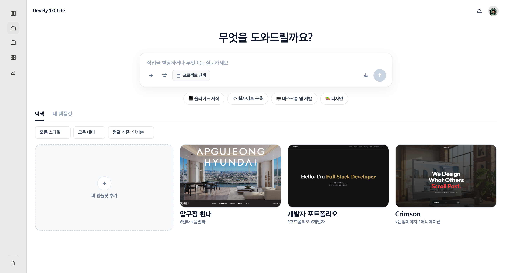

1 2 3 4Devely 1.0 Lite · 로그인 후 첫 화면
| 기능 번호 | HOM-01-01 |
| 기능 명 | 홈 (작업 시작) |
| 기능설명 | 로그인 후 첫 화면. 자연어로 작업을 입력하고 프로젝트를 고른 뒤 AI Workspace로 이동한다. 하단 템플릿으로도 시작할 수 있다. |
| 처리내용 |
1
자연어 작업 요청
2
프로젝트 선택
3
빠른 작업
4
템플릿 탐색 |
| 비고 |
■ 연결되는 기능 : AI Workspace (자연어 요청) : 프로젝트 목록 : 템플릿 · 프로젝트 생성 : 알림 · 프로필 설정 |
| 요구사항 명 | 자연어 작업 요청 |